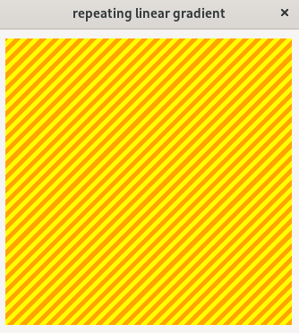
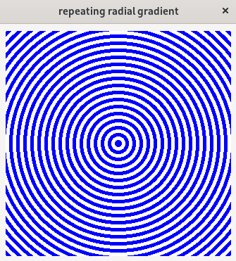

(update:2025/7/25)
反復グラデーションは、線形または放射形のグラデーションを繰り返し表示します。
反復線形グラデーションの基本は、線形グラデーションを直線的に反復して繰り返し表示するものです。反復線形グラデーションの長さは、最初の色経由点と最後の色経由点の間の距離です。
/* 円 */
#m-label {
background-image: repeating-linear-gradient(
-45deg,
orange,
orange 5px,
yellow 5px,
yellow 10px
);
}

中心位置から放射状に繰り返されるグラデーションを表示します。放射形グラデーションを繰り返し表示します。
#m-label {
background-image: repeating-radial-gradient(
blue,
blue 5px,
white 5px,
white 10px
);
}

#include <gtkmm.h>
#include <iostream>
#include <gtkmm/cssprovider.h>
class MyWindow : public Gtk::Window
{
public:
MyWindow();
virtual ~MyWindow() = default;
private:
Gtk::Box m_box;
Gtk::Label m_label;
protected:
// signal handler:
static void on_parsing_error( const Glib::RefPtr<const Gtk::CssSection>& sec, const Glib::Error& err );
// child widgets:
Glib::RefPtr<Gtk::CssProvider> m_refCssProvider;
};
MyWindow::MyWindow()
{
set_title( "Css radial-gradient" );
set_child( m_box );
m_box.set_margin( 10 );
m_label.set_size_request( 320, 320 );
m_label.set_name( "m-label" );
m_box.append( m_label );
// Load extra CSS file
m_refCssProvider = Gtk::CssProvider::create();
Gtk::StyleContext::add_provider_for_display( get_display(), m_refCssProvider,
GTK_STYLE_PROVIDER_PRIORITY_APPLICATION );
m_refCssProvider->signal_parsing_error().connect(
[]( const Glib::RefPtr<const Gtk::CssSection>& sec, const Glib::Error& err )
{ on_parsing_error( sec, err ); }
);
m_refCssProvider->load_from_path( "style.css" );
}
void MyWindow::on_parsing_error( const Glib::RefPtr<const Gtk::CssSection>& sec, const Glib::Error& err )
{
Gtk::CssLocation s_location, e_location;
std::cerr << "on_parsing_error(): " << err.what() << std::endl;
if ( sec ) {
Glib::RefPtr<<const Gio::File> file = sec->get_file();
if ( file ) {
std::cerr << " URI = " << file->get_uri() << std::endl;
}
s_location = sec->get_start_location();
e_location = sec->get_end_location();
std::cerr << " start : " << s_location.get_lines()+1
<< ", end : " << e_location.get_lines()+1 << std::endl;
std::cerr << " s_pos : " << s_location.get_line_chars()
<< ", e_pos : " << e_location.get_line_chars() << std::endl;
}
}
int main( int argc, char* argv[] )
{
auto app = Gtk::Application::create( "gtkmm4.example" );
return app->make_window_and_run<MyWindow>( argc, argv );
}